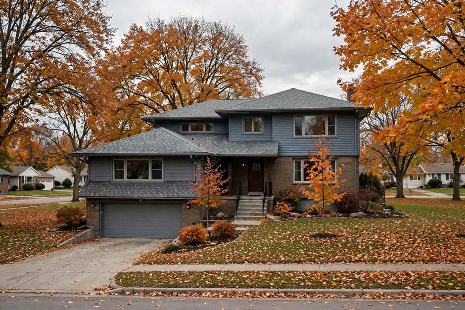
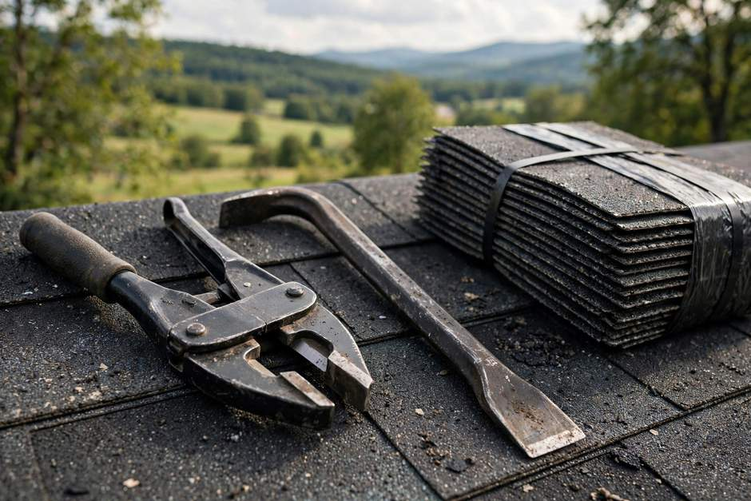
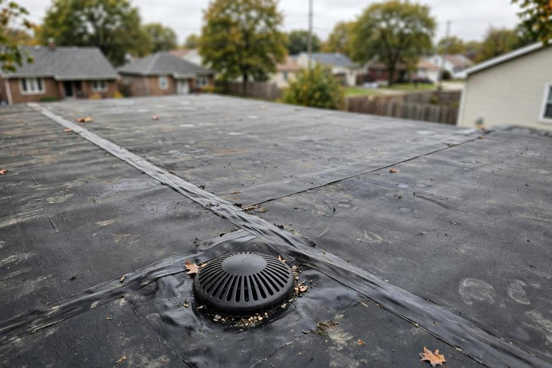

Oakton Street, River Road to Elmhurst Road
The corridor runs east to west along Oakton Street, through Lee Street and Wolf Road to the western city edge. The Plan’s streetscaping focus runs between River Road and Wolf Road.
The Oakton Street Corridor is a corridor sector, not a neighbourhood, in every City source — and this page keeps that qualifier throughout. Its character splits three ways: postwar houses on the flanking streets, flat commercial roofs on the frontage, and new townhomes near the corridor. WP Exterior Inc serves addresses inside the Des Plaines city limits; call (224) 802-4866 during office hours.
Describe what you are seeing on the roof. Calls are answered during the office hours listed below.
Call (224) 802-4866 → Phone is the only contact channel. No email or online form.Corridor work starts by placing the building: flanking house, commercial frontage, or townhome complex, because each is assessed differently. Related reading: repairing a flat roof leak and why a gutter overflows and causes roof damage. See the full list on the services page.

Roof ReplacementOn a flanking postwar house, replacement follows the pitched pattern of that house. On a townhome, steep planes over three levels with shared valleys are the expectation, and the association’s role is confirmed first.View details →
Roof RepairRepair topics differ by building: flashing and penetrations on a pitched house roof, seams and curbs on a flat commercial roof. The roof system is identified before any scope is discussed.View details → Roof InspectionAn inspection records the surface, flashing, valleys, penetrations, and accessible attic conditions, with photographs and written findings — for whichever of the corridor’s three characters the building belongs to.View details →
Roof InspectionAn inspection records the surface, flashing, valleys, penetrations, and accessible attic conditions, with photographs and written findings — for whichever of the corridor’s three characters the building belongs to.View details → Emergency Roof RepairEmergency roof repair addresses active leaks and storm breaches. Call during office hours, describe the building and what is happening, and the next step is arranged from there.View details →
Emergency Roof RepairEmergency roof repair addresses active leaks and storm breaches. Call during office hours, describe the building and what is happening, and the next step is arranged from there.View details → Storm Damage Roof RepairStorm damage is recorded with dated photographs and written findings for the homeowner’s or owner’s own records. Hail can bruise a shingle mat without tearing the surface, so a ground-level look is not a substitute for a roof-level check.View details →
Storm Damage Roof RepairStorm damage is recorded with dated photographs and written findings for the homeowner’s or owner’s own records. Hail can bruise a shingle mat without tearing the surface, so a ground-level look is not a substitute for a roof-level check.View details →
Flat Roof RepairFlat and low-slope roofs on the commercial frontage need membrane thinking: seams, ponding, parapets, and equipment curbs. These are commercial roofs, described separately from the flanking houses, never averaged into one corridor roof type.View details → Gutter InstallationGutters, downspouts, fascia, and soffit form the drainage edge of a pitched roof, and their condition is assessed alongside the roof edge. On the corridor frontage, drainage details belong to the flat-roof system instead.View details →
Gutter InstallationGutters, downspouts, fascia, and soffit form the drainage edge of a pitched roof, and their condition is assessed alongside the roof edge. On the corridor frontage, drainage details belong to the flat-roof system instead.View details → Roof Ventilation InstallationVentilation is part of the roof assembly: intake at the soffit, exhaust at the ridge. On flanking postwar houses, blocked soffit vents and mixed vent types are recurring inspection topics, checked per house.View details →
Roof Ventilation InstallationVentilation is part of the roof assembly: intake at the soffit, exhaust at the ridge. On flanking postwar houses, blocked soffit vents and mixed vent types are recurring inspection topics, checked per house.View details →
Three characters, three approaches — and two things this page refuses to claim: a neighbourhood boundary and an existing Metra station.
The single-family streets north and south of Oakton Street carry the citywide postwar majority: ranch and split-level pitched patterns. No canopy figure is verified for these streets, and none is claimed.
How we help: Inspection checks the planes, valleys, flashing, and attic conditions of the individual house, and records findings in writing.
The frontage itself is commercial: flat and low-slope roofs over shops and businesses, with the least tree cover of any commercial frontage the Plan describes. These roofs are not residential roofing.
How we help: Flat-roof scope is discussed in membrane terms — seams, ponding, parapets, curbs — separately from any house roof, and only for the building in question.
New townhome enclaves stand near the corridor, including Halston Market off East Oakton Street. Townhome roofs are usually association-controlled. The proposed Oakton Metra station remains a concept; it is not presented here as existing.
How we help: Who decides — owner or association — is confirmed per complex, and no page content relies on a station that has not been built.
Stains on ceilings or walls after rain or thaw
Shingle granules collecting in gutters or at downspouts
Curling, cracking, or missing shingles on a pitched roof
Standing water, seam gaps, or blistering on a flat roof
Loose flashing at a chimney, wall, or vent penetration
The anchors below follow the corridor itself: the streets, the school, and the district leg to downtown. The City-Data statistical polygon called the Oakton Business District is not used here — it is a small statistical slice, not the corridor.
The corridor runs east to west along Oakton Street, through Lee Street and Wolf Road to the western city edge. The Plan’s streetscaping focus runs between River Road and Wolf Road.
The business district continues north along Lee Street to downtown, forming the Oakton–Lee district. The leg, not just the east–west street, is part of the sector.
The high school anchors the corridor at Wolf Road. It is an institutional anchor, and its roofs are excluded from any residential characterisation.
A new townhome enclave off East Oakton Street, described in the builder’s listing as an enclave of 125 townhomes at East Oakton Street and Lee Street. Townhome roofs are usually association-controlled.
WP Exterior Inc serves addresses inside the Des Plaines city limits. A Des Plaines mailing address does not by itself prove an address is inside the city: a large unincorporated area east of I-294 carries Des Plaines mailing addresses but has never been part of the city, and permit jurisdiction follows the city limits. If an address sits near an edge or on a border road, its jurisdiction is checked per address before any permit or service claim is made. Corridor addresses sit inside the city limits along Oakton Street and the Lee Street leg; an address on a border arterial or near the river at the corridor’s east end gets jurisdiction and flood-map checks per address.
Call with the full street address. City maps and county parcel records settle whether an address is inside Des Plaines, and the FEMA Flood Insurance Rate Map is checked per address where floodplain questions arise. No list of ZIP codes is used as a coverage boundary.
“Thank you Patrick for doing an amazing job. Great work me and my wife are very happy. Also thanks for being reliable.”
Phil Negron2 months ago · Gutter repairs
Google review“I recently had the pleasure of working with WP Exterior for my roofing needs, and I must say, I couldn't be more satisfied with the outcome. From the moment I contacted them, it was evident that they truly value their customers. …”
Filip Libera2 years ago · Verbatim excerpt
Google review“Patryk was great to work with and extremely professional. I highly recommend WP exteriors and plan on using them again in the future!”
Brian Avila Gaona5 months ago · Roof inspection
Google reviewCall during office hours if your question is not answered here.
Call (224) 802-4866 →No — not in City sources. Oakton Street is a corridor, and this page publishes it as a corridor sector only, with the qualifier kept throughout. The residential content is the flanking streets and the complexes near the corridor, not the commercial frontage.
No. A station near Oakton Street was proposed in the 2019 plan and still appears as a potential station in 2026 district concepts. It is not built, and this page never presents it as existing.
Three: postwar pitched roofs on the flanking houses, flat and low-slope roofs on the commercial frontage, and steep pitched planes on new townhomes. They are stated separately and never averaged into one corridor roof type.
Townhome roofs are usually controlled by the association, and the declaration governs. Who decides is confirmed per complex before any scope is discussed.
The frontage does not. The Comprehensive Plan specifically notes that Oakton Street lacks street trees despite the city's Tree City USA status. No canopy figure is verified for the flanking residential streets, and none is claimed.
Call WP Exterior Inc during office hours and describe the building — flanking house, commercial frontage, or townhome — and what you are seeing.
Call (224) 802-4866 during office hours. Tell us the street address along the corridor and the kind of building, and what you are seeing.